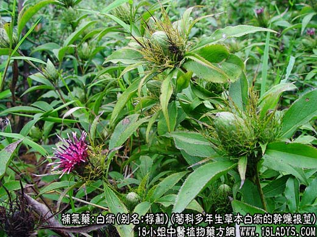
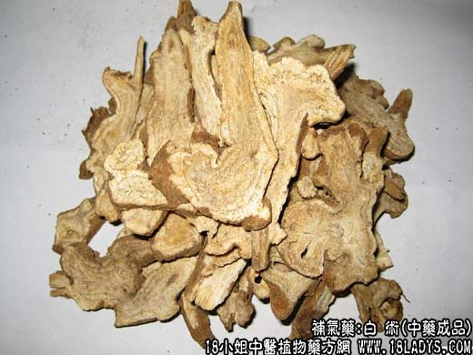
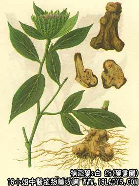

本品为常用中药。始载《神农本草经》，原名“术”（包括苍术、白术）。陶宏景曾提及术有白术、赤术二种。至寇宗爽谓：有苍术、白术之分。
来源：为菊科多年生草本植物白术的干燥根茎。多为栽培，亦有野生。
产地：主产于浙江、江西、湖南、安徽。此外四川、福建、江苏等地均有引种。
性状鉴别：本品呈不规则的团块状或条块状，大小均有，长5～10厘米，直径1.5～5厘米。表面黄褐色，或微带棕色。有细密的纵皱纹，全体多有瘤状突起，瘤突先端有深褐色下陷的盘状芽痕。主根下端稍粗，瘤突较大，向上渐细瘤突较小，顶端常有一段柴质茎基。下部有明显的根痕或须根残留。质坚硬，不易折断，断面黄白色，有散在的小油点，中央多有裂隙，导管群放射排列，形成层环状。气香特异，味甘微苦辛，略带粘液性。以个大整齐，表面黄褐色，断面黄白色，质坚实者为佳。
主要成分：含挥发油，其中主要为苍术醇，另含白术酮、维生素A类物质等。
功效与作用：补脾益气、燥湿利水，其作用为：
1、健胃。助消化，对止呕止泻有一定作用，但常需配消导药或利水渗湿药。
2、利尿。作用较明显而持久，可能是由于抵制肾小管重吸收机能，增加钠的排泄。
3、镇静。动物实验表明，所含挥发油小量有镇静作用。
此外，临床观察白术还有止汗、滋补、安胎等作用；实验证实有保护肝脏，防止肝糖元减少的作用。又白术挥发油对动物肿瘤生长有抑制作用，其对小鼠肉瘤180的抑制率为31%～49%[《医学学报》，10（4）：199，1963]。
炮制：切片生用，麸炒、土炒、炒焦。
性味：甘、苦、微温。
归经：入脾、胃经。
功能：补中益气，健脾和胃，燥湿利水，止吐泻，止汗，安胎。
主治：中气虚弱，脾运不健引起的消化不良，水肿胀满，呕吐泻痢，胎动不安，体虚自汗等症。
临床应用：主要用于补脾。
1、用于脾虚泄泻，表现大便溏泄、饮食减少、上腹胀满、舌淡苔白、脉沉，多由于胃肠功能差，肠壁吸收功能减退所致。常见于慢性消化不良、慢性非特异性结肠炎，此时宜以白术配木香、砂仁、枳实等，能健胃消食，止泻除满，增进食欲；一般情况下和参苓白术散亦好；如虎寒较甚，则配党参、干姜等，方如理中汤，此方为治疗脾胃虚寒泄泻的代表方。
2、用于脾虚水肿，有肢体浮肿、面色苍黄、食欲不振、大便稀烂、神倦肢冷、舌淡苔白、脉沉等症状者（例如肾性水肿、营养性水肿以及妊娠水肿等）。多与利水渗湿药配伍，轻症者可用五苓散，或在五皮饮内加入白术，增强利尿作用，此方对妊娠水肿疗效较好。如脾肾虚寒显著，则需配附子、干姜（或生姜），方如实脾饮和温阳利水汤（旧名直武汤）。
3、用于脾虚自汗，特别是治疗小儿病后食欲不振，体弱自汗，白术常不可少，可与淮山药、糯稻根、芡实等配伍。阳虚自汗，平日易伤风感冒者，可与黄芪、防风配伍，方如玉屏风散，能止自汗，提高肌表抵抗力，预防感冒。
4、用于关节风湿痛（慢性风湿性关节炎），功用与苍术基本相同，常配威灵仙、防己、桑枝等，取其有健脾去湿和镇压静止痛作用。
5、用于安胎，与黄芩配伍。
使用注意：1、白术性湿而燥，故高温、阴虚火盛、津液不足、口干舌燥、烦渴、小便短赤、湿热下痢（如菌痢、细菌引起的急性肠炎等）、肺热咳嗽等情况下不宜用。
2、与苍术比较：苍术气味辛烈，燥散之性有余，而补养之力不足；白术微辛，苦而不烈，其力补多于散，用于健脾较好。
用量：3～12g。
处方举例：玉屏风散（《世医得效方》）：黄芪18g，防风6g，白术6g，水煎服。
注：白术过去品类众多，规格繁琐，如产浙江者名浙白术，产于潜县的名于术，产湖南平江的名坪术等等。因采收和加工方法不同，有生晒冬术。因品种不同有种术（产安徽）鹤形术、金线于术等。又有家种野生之分，每个品种又分若干规格等级。1964年商业部、卫生部为了促进生产，改善经营，提搞质量，根据各省生产白术的实际情况，制定了新规格标准。将属于白术的烘干品，统称白术，不再冠加地名，共分为四个等级：20以内为一等，40支以内为二等，70支以内为三等，70支以外为四等（每市斤支数）。
生晒冬术、形态与白术相同，唯内碴白色或油黄色，肉结实或油润，无裂隙，余无显著区别，亦按白术情况划分等级。
野生于术早已绝种，现商品于术，实际也是以白术种籽，播种于浙江于潜县山区的栽培品。形态大体与白术相似，外皮较细腻，淡黄褐色，并带有一段3～5厘米的茎芦，全形略似鸡腿，气较白术清香，别无其它区别。
安徽产的种术，过去按其形状不同，经加工后，分为大、小种术，扣子术、金线术等，各地多作于术药用。其主要特征，内碴黄白色，散有多数橙色或棕绝色油室，习称“朱砂点”。香气燥烈，味辛辣。据说系采用苍术种子播种的，因品种尚未澄清，故未列入两部颁发的规格之内，现市场商品少见。